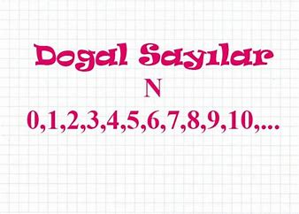

Doğal sayılar nelerdir? Doğal sayılar kaçtan başlar?
Doğal sayılar sıfırdan başlayarak sonsuza kadar devam eden sayılar kümesidir.
Sayma sayılarına 0 (sıfır) sayısını katarsak doğal sayılar oluşur. Peki, Doğal sayılar nedir,
nelerdir? Doğal sayı kümesi nedir? Doğal sayılar kaçtan başlar?
Doğal sayılar kümesinde işlemler nasıl yapılır? İşte doğal sayı ile ilgili bilgiler.
DOĞAL SAYILAR
Doğal sayılar kümesi {N} =\{0,1,2,3,4,5,6,7,...\}} şeklinde sıralanan tam sayılardır.
Sayma sayılarına 0'ı ekleyerek elde edilir. Negatif değer almazlar.
Bazı kaynaklarda "0" doğal sayı olarak alınmaz.
Matematikte hâlâ sıfırın bir doğal sayı olarak alınıp alınmayacağı tartışma
konusu olup cebirsel inşalar yapılmak isteniyorsa "0" sayısının doğal sayı olarak alınması avantaj sağlayabilir.
Matematiğin diğer dallarında da problem hangi durumda daha kolay ifade edilebilecekse doğal sayılar kümesi de o şekilde alınır.
Her doğal sayı:
Solundaki sayıdan büyük,
Sağındaki sayıdan küçüktür.
.ARDIŞIK SAYILAR .
Kendisinden önce ve sonra gelen sayılara bir kural ile bağlı olan sayılara ardışık sayılar denir.
Ardışık doğal sayılar.:
1 fazla 1 fazla 1 fazla
0 1 2 3
Ardışık çift doğal sayılar.:
2 fazla 2 fazla 2 fazla
0 2 4 6
Ardışık tek doğal sayılar.:
2 fazla 2 fazla 2 fazla
1 3 5 7
DOĞAL SAYILARDA SIRALAMA.
Basamak sayısı diğerinden büyük olan sayı diğerinden büyüktür.
108 87
Basamak sayıları aynı ise ; en büyük basamaktan başlanarak sırayla aynı adlı basamaklar karşılaştırılır.
Aynı basamaktaki sayılardan hangisi büyükse o sayı büyüktür.
685 392
İKİ DOĞAL SAYI ARSINDAKİ SAYILARIN SAYISINI BULMA
İki doğal sayı arasındaki sayıların sayısı şu formülle bulunur:
ÖRNEK 1.: 5 ile 15 arasında kaç doğal sayı vardır?
ÇÖZÜM: 15-5=10 10-1=9 tane doğal sayı vardır
ÖRNEK 2.: 305 ile 601 arasında kaç doğal sayı vardır?
ÇÖZÜM.: 601-305= 296 296-1=295 tane doğal sayı vardır.
ÖRNEK 3.: 447 ile 567 arasında kaç doğal sayı vardır?
ÇÖZÜM. : 567-447=120 120-1=119 tane doğal sayı vardır.
BASAMAK DEĞERİ.
Rakamların sayıda bulunduğu basamağa göre aldığı değere basamak değeri denir.
4 5 2 3 Basamak değeri
3 = 3.1
20 = 2.10
500 = 5.100
4000 = 4.1000
Görüldüğü gibi rakamların basamak değeri,sayı değeri ile bulunduğu basamağın çarpımına eşittir.
Ek Bilgi
*Bir sayının
Birler basamağı 1 artar veya eksilirse sayı 1 artar veya eksilir.
Onlar basamağı 1 artar veya eksilirse sayı 10 artar veya eksilir.
Yüzler basamağı 1 artar veya eksilirse sayı 100 artar veya eksilir.
ÖRNEK. 1: 4758 sayısının yüzler,onlar ve birler basamaklarını 1'er artırırsak sayı kaç artmış olur?
ÇÖZÜM. : Birler basamağı: 1 artar
Onlar basamağı.: 10 artar
Yüzler basamağı.: 100 artar
O halde sayı. : 111 artar.
ÖRNEK 2.: 2396 sayısının birler basamağını 3,onlar basamağını 4,yüzler basamağını 2 eksiltirsek sayı kaç eksilir?
ÇÖZÜM .: Birler basamağı: 3 eksilir
Onlar basamağı.: 40 eksilir
Yüzler basamağı.: 200 eksilir
O halde sayı. : 243 eksilir.
ÖRNEK 3.: abc üç basamaklı bir sayıdır. Rakamlarının her birinin sayı değerleri üç artarsa sayı kaç artar?
ÇÖZÜM .: Birler basamağı: 3 artar
Onlar basamağı.: 30 artar
.Yüzler basamağı.: 300 artar
O halde sayı : 333 artar.